2025
Février
-
08 —
💖 Un peu de magie et d’amour en lecture


 ♡ Le Château de Hurle (Diana Wynne Jones), ♡ Le Château des nuages (Diana Wynne Jones), ♡ La fille dans l’écran (Lou Lubie et Manon Desveaux)
♡ Le Château de Hurle (Diana Wynne Jones), ♡ Le Château des nuages (Diana Wynne Jones), ♡ La fille dans l’écran (Lou Lubie et Manon Desveaux) -
04 —
Noël, altruisme, magie, animation, horreur et comédie
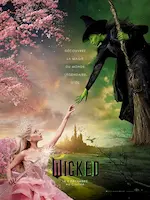
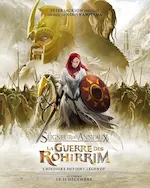
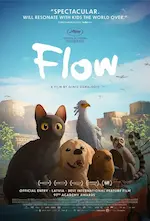
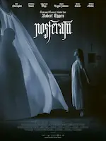
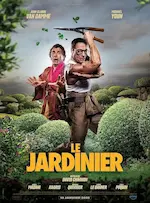
Dear Santa, Un merveilleux Noël en famille, Fêlés, Wicked, Le Seigneur des Anneaux - La guerre des Rohirrim, Flow, ♡ Nosferatu, Le jardinier
2024
Décembre
-
22 —
Noël et haute voltige
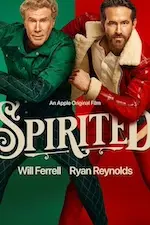
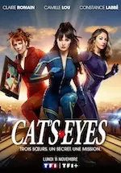
♡ Red One, Spirited - L’Esprit de Noël, Un Noël givré, Noël sous les aurores boréales, ♡ La sœur des neiges, Our little secret, En colo avec ma mère, Cat’s Eyes - 15 — Quelques conseils d’un lecteur et d’un auteur pour bien écrire
-
01 —
Dernières lectures


 Le Zèbre (Alexandre Jardin), La vie secrète des animaux (Peter Wohlleben), Guide pratique des habitats alternatifs en France (Toits alternatifs - collectif)
Le Zèbre (Alexandre Jardin), La vie secrète des animaux (Peter Wohlleben), Guide pratique des habitats alternatifs en France (Toits alternatifs - collectif)
Novembre
-
30 —
Comédies romantiques, magie et autres films
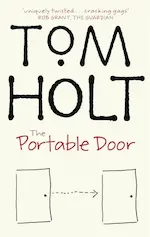
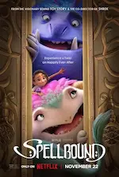
This time next year, Le bal masqué de Noël, Le nombre magique de Noël, The Merry Gentlemen, The portable door, Ellian et le sortilège, Sharper, Veuillez nous excuser pour la gêne occasionnée -
10 —
Séries et animés
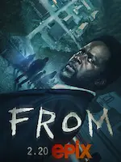
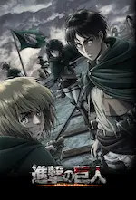
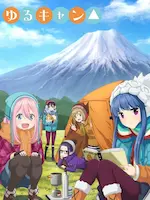
♡ From, Resident alien, Attack on Titan, ♡ Yuru Camp -
10 —
Comédies
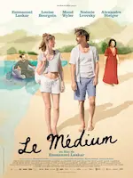
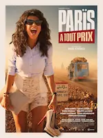
Loups-garous, Le médium, Paris à tout prix, ♡ Pourquoi tu souris ?, Wolfs -
09 —
Poneys de Noël, romance fantastique et vengeance
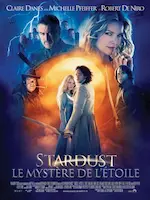
Falling inn love, Lettres magiques au Père Noël, Un ami pour Noël, ♡ Stardust - Le mystère de l'Étoile, Le Comte de Monte Cristo, Speak no Evil, Maurice le chat fabuleux, Joker folie à deux
Octobre
-
29 —
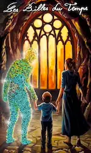
Les billes du temps, nouvelle -
17 —
Creacover 2024, seconde partie
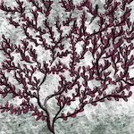
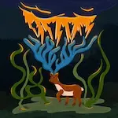
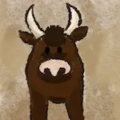
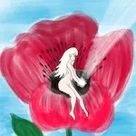
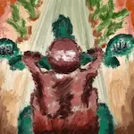
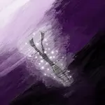
-
06 —
Poneys de Noël en veux-tu en voilà, douceur fantastique, comédie délirante et action hard core
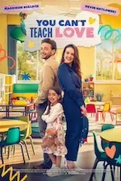
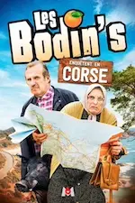
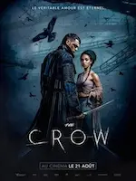
Romance écossaise, Un mariage qui fait rêver, L’amour ne s’apprend pas, Le guide du célibataire, We have a ghost, Les Bodin’s enquêtent en Corse, The Crow, The killer
Septembre
-
29 —
Comédie, action, tranche de vie, enquêtes et fantasy
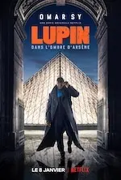
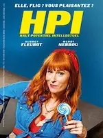
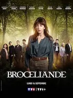
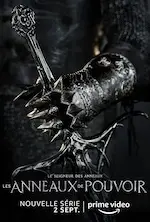
Young Sheldon, ♡ Lupin, ♡ Le remplaçant, ♡ HPI, Brocéliande, Les anneaux de pouvoir - 19 — Nouvelle balade dans la vallée de Chaudefour
Août
-
31 —
Poneys de Noël à gogo, gloubi-boulga émotionnel et comédie inspirée
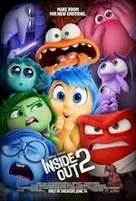
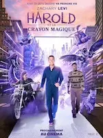
♡ La Princesse et le bodyguard, La probabilité statistique de l’amour au premier regard, À Noël mon Prince viendra, Love again, Amoureuse de mon meilleur ami, Vice versa 2, ♡ Harold et le crayon magique -
25 —
Creacover 2024, première partie
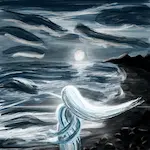
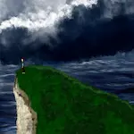
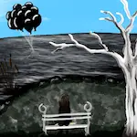
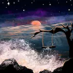
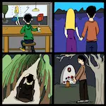
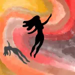
-
18 —
Pseudo comédies, presque romance, semblant d’horreur et rencontres
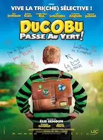
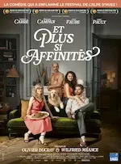
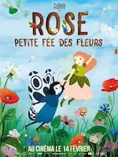
Ducobu passe au vert, Jeff Panacloc - À la poursuite de Jean-Marc, To the Moon, Le mangeur d’âmes, Et plus si affinités, Rose - Petite fée des fleurs - 13 — Vacances en Ardèche en août 2024
-
02 —
Romance, drames, comédies et bestioles
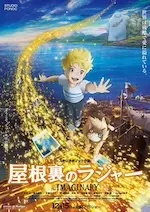
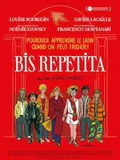
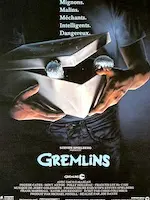
♡ Drawing Closer, L’imaginaire, Bis Repetita, Gremlins